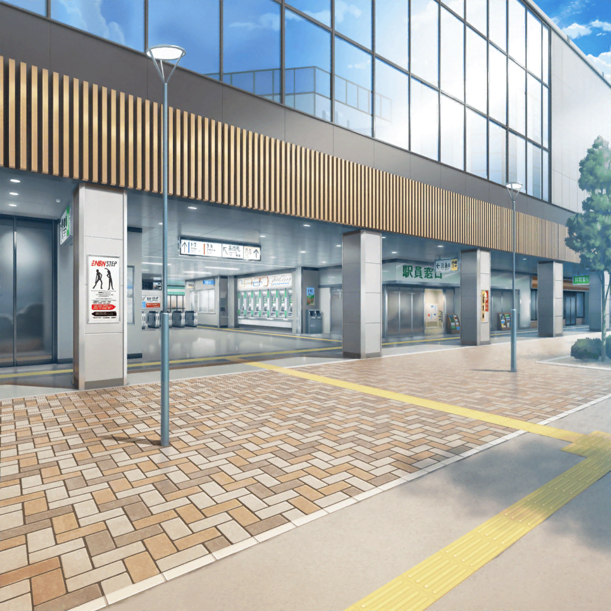

２駅隣の駅 駅前
花音
千聖ちゃんと出会った時のこと、なんだか懐かしいね
千聖
あの時は、本当に嬉しかったわ。
あんなふうに普通に接してくれる子に初めて学校で会ったの
千聖
友達になってくれて、ありがとう、花音
花音
ふぇ！？ お、大げさだよ〜！
花音
わ、私のほうこそ、いつも仲良くしてくれてありがとう
花音
あの、ところで千聖ちゃん……？
千聖
どうしたの？
花音
結構歩いたと思うんだけど、カフェまであとどのくらいかな？
千聖
ちょっと待って。スマホのマップで確認するわ。
そろそろ着くはずだと思うけど……
花音
……あっ！ 千聖ちゃん、あのお店ってもしかして！
千聖
！ ええ、あのお店が目的地のカフェよ……！
花音・千聖
…………！
花音
うう、ちゃんと着いたよ〜〜！ 千聖ちゃん！
千聖
本当ね……最初はどうなることかと思ったけれど……
花音
えへへ、夢、叶えることできたんだね
千聖
ええ、小さな夢だけど、私でも叶えることができたのね……
花音
……？ ねぇ、千聖ちゃん？ あそこにいるのって……
美咲
薫さーん！ そっちは花音さん達いた？
薫
いや、こっちにはいなかった。
やはり迷っているのかもしれないね
彩
お店の近くで待ってれば来ると思ったのに……
どこ行っちゃったんだろ？
薫
すまない。公園で私が子猫ちゃん達と
戯れている間に、完全に二人を見失ってしまった
彩
えっ、か、薫さんのせいじゃないよ……！
美咲
いや、戯れてた人をそんなフォローしなくていいですよ
薫
ああ、肝心な時に力になれないなんて悲劇だ……！
千聖
……別にあなたの力は必要ないけど？
薫
ん……？
美咲・薫・彩
ええっ！？
彩
千聖ちゃんと花音ちゃん、いつの間に……！
千聖
それはこっちのセリフよ
花音
ええと、みんな、どうしてここにいるの？
千聖
私達を探していたように見えたのだけど、気のせいかしら？
美咲
え、ええと、実は……
美咲
……というわけなんです
千聖
こっそり人についてくるなんて、いい趣味とは言えないわね
美咲
すみません。駅での様子を見てたら気になっちゃって……
彩
わ、私もごめんね。千聖ちゃん……
薫
その、二人の力になろうとしていたことはわかってほしい
千聖
だからって、こっそりついてこなくてもいいでしょう？
花音
ち、千聖ちゃん……
みんな心配してくれたんだよ
千聖
ええ、わかってるわ。
でも、心配する必要なんてなかったでしょう？
千聖
こうして、私と花音は無事に目的地までたどり着けたのだから
美咲
それは確かに……
でも、いろいろ大変じゃなかったですか？
美咲
見てましたけど、駅では人の波に流されてましたよね……？
彩
私も駅のホームで、二人が必死に走ってるのを見たよ！
転びそうになりながら走ってたから、ひやひやしたよ〜！
薫
それにハンドメイドのイベントだよ。
あの目が回るような人混みに大変な思いをしただろう？
千聖・花音
大変……？
花音
そういえば、電車は大変だったね……
千聖
ええ、間違えて急行に乗るなんて思いもしなかったわ
花音
でも、ギリギリで乗れた時はなんだか
映画のワンシーンみたいだったね。ドキドキしちゃった
千聖
ふふっ、ちょっとだけスリルがあったわね
千聖
乗り間違えたのは悔しいけれど、
悪いことばかりじゃなかった気がするわ
花音
うん！ かわいい指輪買ったよね！
あ、そうそう、薫さんと美咲ちゃんにお土産があるよ！
千聖
彩ちゃんにもお土産があるから楽しみにしてて
彩
お、お土産……？
薫
あ、ありがとう。それは嬉しいよ
千聖
それから、会場で見た空、キレイだったわね。
確かあの時、空を見て花音が言ったのは……
千聖・花音
空の水族館！
千聖・花音
ふふっ
えへへ
美咲
なんか盛り上がってますね……
彩
大変そうに見えたけど、意外と楽しんでたんだ……
薫
どうやら本当に余計な心配だったのかもしれないね
花音
ううん、心配してくれて、ありがとう
花音
そうだ。せっかくだし、このお店で一緒にお茶しない？
美咲
あたし達もお邪魔しちゃっていいんですか？
千聖
ええ、もちろんよ。まだこっそり私達を
見ていたいのなら、無理にとは言わないけど
彩
うう、ごめんってば〜！
薫
それじゃあ、積もる話に花を咲かせようか。
ここに来るまで、お互いいろいろあったみたいだからね
花音
えへへ、楽しいお茶会になりそうだね、千聖ちゃん！
千聖
ええ、そうね。楽しみだわ